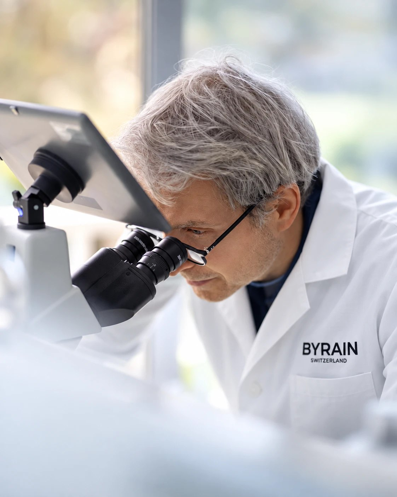
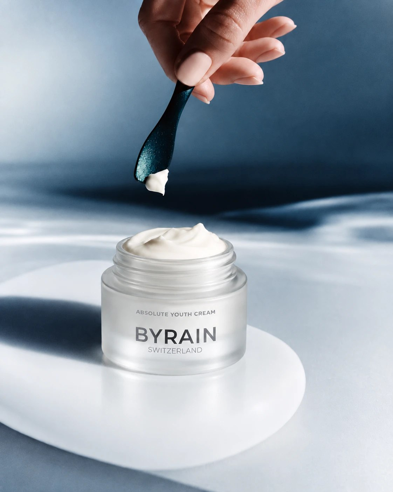

Формула начинается не с тренда, а с биологической задачи кожи. Мы выбираем молекулы с понятным механизмом действия, вводим их в рабочих концентрациях и проверяем стабильность, совместимость и эффективность.
Не обещания на упаковке, а три решения внутри каждой банки: какие активы выбраны, в какой концентрации и как они доставлены в кожу. Листайте, карточки раскроются одна за другой.
01
Архитектура формул
Активы, которые говорят с клеткой, а не маскируют возраст
Каждая формула BYRAIN собрана из трёх классов сигнальных молекул. Пептиды передают клеткам команды: расслабить мышцу, строить коллаген, сдержать меланин. Фитоэстрогены красного клевера и сои отвечают на падение эстрогенов после 45. Факторы роста запускают обновление. Активы не дублируют друг друга, а закрывают разные причины одного признака.
SYN®-AKEMatrixyl® 3000SYN®-COLLGHK-CuИзофлавоны клевера и соиOligopeptide-1, -2, -3
3класса сигнальных молекул в одной архитектуре: пептиды, фитоэстрогены, факторы роста
8ключевых активов с клиническими данными и собственной страницей в атласе
2коллекции по биологии возраста: мимика до 45 и плотность после 45, а не «крем для всех»
02
Высокие концентрации
Концентрации, при которых есть результат, а не строка в составе
Актив работает только в дозе, на которой его проверяли. Поэтому ключевые активы BYRAIN стоят в концентрациях из исследований производителей и указаны на упаковке: ретинол в максимальной косметической дозе 1%, витамин C 10%, комплекс кислот 10%, Matrixyl® 3000 в клинической концентрации 3%. У большинства кремов в рознице ретинол стоит на уровне 0,1–0,5% подтвердить сравнение у технолога.
Указано на упаковкеДозы из исследованийБез следовых количеств
0%липосомального ретинола: верхняя граница для косметики, у масс-маркета 0,1–0,5%
0%стабильных форм витамина C и 10% комплекса из четырёх кислот
0%Matrixyl® 3000: концентрация исследования Sederma на 23 женщинах
03
Системы доставки
Актив должен дойти до кожи целым и в нужное время
Самая сильная молекула бесполезна, если окислилась во флаконе или осталась на поверхности. Ретинол BYRAIN заключён в липосомы: защищён от света и воздуха, высвобождается постепенно и переносится мягче. Oligopeptide-68 инкапсулирован для доставки к меланоцитам. Витамин C взят в стабильных производных, которые активируются уже в коже. Пептиды пальмитоилированы: липидный фрагмент проводит их через роговой слой. Комплекс церамидов восстанавливает барьер, пока активы работают.
4технологии доставки в линейке: липосомы, капсулы, стабильные формы, пальмитоилированные пептиды
0окисления ретинола и витамина C во флаконе: дозаторы, стекло, стабилизированные формы
1барьерный комплекс в каждой активной формуле: три церамида, фитосфингозин, холестерол
0исследований и досье открыты для просмотра и скачивания
0научных дома: DSM-Firmenich, Sederma, Croda
0дней в типовом цикле клинического наблюдения
ISO 22716стандарт надлежащей производственной практики косметики подтвердить сертификат
В основе подхода
Пептиды, фитоэстрогены и факторы роста работают как точные сигналы: они говорят клеткам, что делать, а не маскируют то, что уже произошло. Поэтому каждую молекулу мы можем объяснить, измерить и повторить.
Три принципа ниже проверяются на каждой формуле. Если актив не проходит хотя бы один, его нет в составе, каким бы модным он ни был.
Разбор данных перед утверждением формулы
Три принципа
Что проверяет каждая формула
Концентрация, проверка и прозрачность. Нажмите «Подробнее», чтобы увидеть, что стоит за каждым словом.
01
Клинически значимые концентрации
Активы вводятся в дозировках, при которых их действие воспроизводимо и ощутимо для кожи, а не в следовых количествах ради строки в составе.
SYN®-AKE исследован в концентрации 4%, Matrixyl® 3000 в 3–4%, SYN®-COLL в 2,5%, ретинол в BYRAIN стоит в максимальной косметической концентрации 1%. Рабочий диапазон каждого актива мы берём из исследований производителя и научных публикаций, они открыты в библиотеке ниже.
02
Многоступенчатая проверка
От оценки сырья и стабильности формулы до контроля готового продукта. Каждый этап нужен для предсказуемого результата.
Входной контроль сырья по сертификатам поставщика, тест стабильности формулы при разных температурах, проверка совместимости активов между собой, микробиологический контроль и выпуск партии по стандарту ISO 22716. перечень этапов подтвердить у технолога
03
100% прозрачность активов
Ключевые активы названы по INCI на каждой карточке товара, а исследования, на которые мы опираемся, можно открыть и скачать.
Мы различаем данные по активу и данные по готовому продукту и всегда пишем, что именно измерялось: сколько добровольцев, какая концентрация, сколько дней. Если испытаний готового крема на панели не проводилось, карточка говорит об этом прямо.
Как рождается формула
Путь молекулы
Пять шагов от задачи кожи до банки на полке. Нажмите на шаг, чтобы увидеть, что происходит на каждом.
до −52%размера мимических морщин лба через 28 дней
80%добровольцев с измеримым сглаживанием рельефа
73%добровольцев с измеримым уменьшением морщин
Синтетический трипептид повторяет фрагмент природного пептида Waglerin-1 и временно снижает передачу сигнала на мышечный рецептор ацетилхолина. Мышца сокращается слабее, мимическая складка расправляется. В исследовании производителя крем с 4% SYN®-AKE наносили на лоб дважды в день 28 дней, по 15 добровольцев 40–60 лет в группе против плацебо.
39панелистов 54,5 ± 6 лет, половина лица против плацебо
−17,1%по ключевому параметру морщин через 56 дней назвать параметр по PDF
4%концентрация в исследовании, рекомендованная 3–4%
Матрикины — фрагменты белков матрикса, которые кожа сама использует как сигнал к восстановлению. Пара Pal-GHK и Pal-GQPR активирует синтез коллагена, эластина и гиалуроновой кислоты, причём с возрастом именно этот сигнальный путь слабеет первым. Второй пептид пары дополнительно снижает воспаление.
44добровольца 41–60 лет в трёх группах против плацебо
−12%глубина морщин у глаз при 2,5% за 84 дня, p = 0,05
0значимого эффекта у плацебо за те же 84 дня
Трипептид повторяет механизм, которым организм сам запускает синтез коллагена через TGF-β, и одновременно сдерживает ферменты MMP-1 и MMP-3, разрушающие коллаген. В независимом исследовании в Лионе измеряли рельеф «гусиных лапок» методом PRIMOS: при 1% эффект слабый, при 2,5% значимый.
Пептид меди GHK-Cu: то, чего в коже становится меньше
Copper Tripeptide-1
Досье · обзор
200 → 80нг/мл GHK-Cu в плазме крови в 20 и в 60 лет
3аминокислоты: глицин, гистидин, лизин в комплексе с медью
95%минимальная чистота пептида в сырье
GHK-Cu — природный комплекс, впервые выделенный из плазмы человека. Он активирует заживление, стимулирует синтез коллагена и гликозаминогликанов в фибробластах, работает антиоксидантом и противовоспалительно. С возрастом его уровень падает более чем вдвое, поэтому в формулах для зрелой кожи он возвращается снаружи.
70–75% → 85–90%жизнеспособность клеток кожи в культуре с экстрактом клевера
2026год публикации исследования изофлавонов красного клевера в MDPI
45+возраст, с которого фитоэстрогены становятся ключевым активом
С падением эстрогенов синтез коллагена замедляется, и кожа теряет плотность быстрее, чем раньше. Изофлавоны красного клевера и сои похожи по форме на эстрогены кожи и работают местно, поддерживая плотность, упругость и регенерацию. Это основа коллекции ABSOLUTE YOUTH для периода гормональных изменений.
100%участников с уменьшением выраженности пятен через 56 дней
28дней до заметного осветления по данным производителя
Пептид сдерживает сигнальный путь, который запускает синтез меланина в пигментном пятне, и делает это без агрессивных отбеливателей. Инкапсуляция обеспечивает доставку в кожу и постепенное высвобождение. В креме применялся в концентрации 5% дважды в день.
62%сглаживание контура глаз, Eyeliss™ 3%, 20 женщин, 56 дней
−12,5%интенсивность тёмных кругов, Haloxyl™ 2%, улучшение у 72%
−20,4%высота складки нависшего века, Beautifeye™ 3%, до −91%
Три комплекса закрывают три разные причины усталого взгляда. Eyeliss™ (Dipeptide-2, гесперидин, Pal-GQPR) усиливает лимфодренаж и укрепляет капилляры. Haloxyl™ (Pal-GHK, Pal-GQPR, хризин, N-гидроксисукцинимид) выводит пигменты крови, которые окрашивают тёмные круги. Beautifeye™ (экстракт альбиции и дарутозид) подтягивает нависшее верхнее веко: 24 женщины, средний возраст 60 лет, два месяца против плацебо.
64женщины 40–65 лет, ежедневное применение 8 недель
+58%упругость кожи по оценке дерматолога
86%участниц с улучшением; эффект на пигментацию у 100%
Ретинол превращается в коже в ретиноевую кислоту, ускоряет обновление клеток, стимулирует синтез коллагена и подавляет фермент MMP-1, который его разрушает. Данные производителя получены уже на 0,1%. В креме BYRAIN ретинол 1% заключён в липосомы и дополнен комплексом церамидов, чтобы максимальная концентрация переносилась без шелушения.
Документы, на которые опираются формулы BYRAIN: клинические отчёты и досье научных домов, обзоры и мета-анализ в рецензируемых журналах. Каждый можно открыть здесь или скачать.
Показано 16 из 16
Клиническое · in vivoDSM-Firmenich
SYN®-AKE: клинические данные и механизм
Досье производителя, 4 страницы
До −52% размера мимических морщин за 28 дней, 4%, 15 добровольцев в группе
Данные производителей относятся к активам в указанных концентрациях, а не к готовым продуктам BYRAIN. Публикации MDPI и Frontiers распространяются по открытой лицензии CC BY. Документы приведены как есть, на языке оригинала. права на размещение досье Sederma и DSM на сайте подтвердить с поставщиками
Научные партнёры
Кто стоит за активами
BYRAIN работает с европейскими исследовательскими домами и поставщиками фармацевтического уровня. У каждого своя клиника и свои публикации.
DSM-Firmenich
Швейцария, Базель. Пептиды собственного синтеза и витамины: от исследований змеиного яда до стабилизированного ретинола.
SYN®-AKE
SYN®-COLL
Retinol GS 50
Sederma
Франция, группа Croda. Автор концепции матрикинов и комплексов для зоны глаз с собственной клинической базой.
Matrixyl® 3000
Eyeliss™
Haloxyl™
Beautifeye™
Croda
Великобритания. Материнская компания Sederma, поставщик активов и функциональных ингредиентов фармацевтического уровня.
Матрикины
Церамиды
Эмоленты
Команда
Люди, которые создают BYRAIN
Технологи, дерматологи и косметологи, которые читают те же исследования, что и вы, и отвечают за каждую строчку состава.

Контроль формулы перед выпуском партииИсследование структуры кожи

Готовая формула: текстура, которую проверяли месяцами
Швейцарская точность как метод, а не как слово на упаковке
Разработано в Швейцарии, активы европейских научных домов, производство по ISO 22716. Каждая формула проходит тот же путь: задача, молекула, концентрация, стабильность, контроль. уточнить: где разработка, где производство